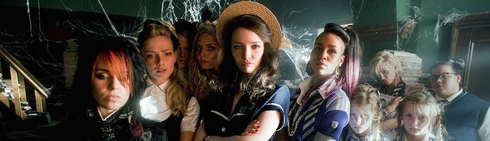
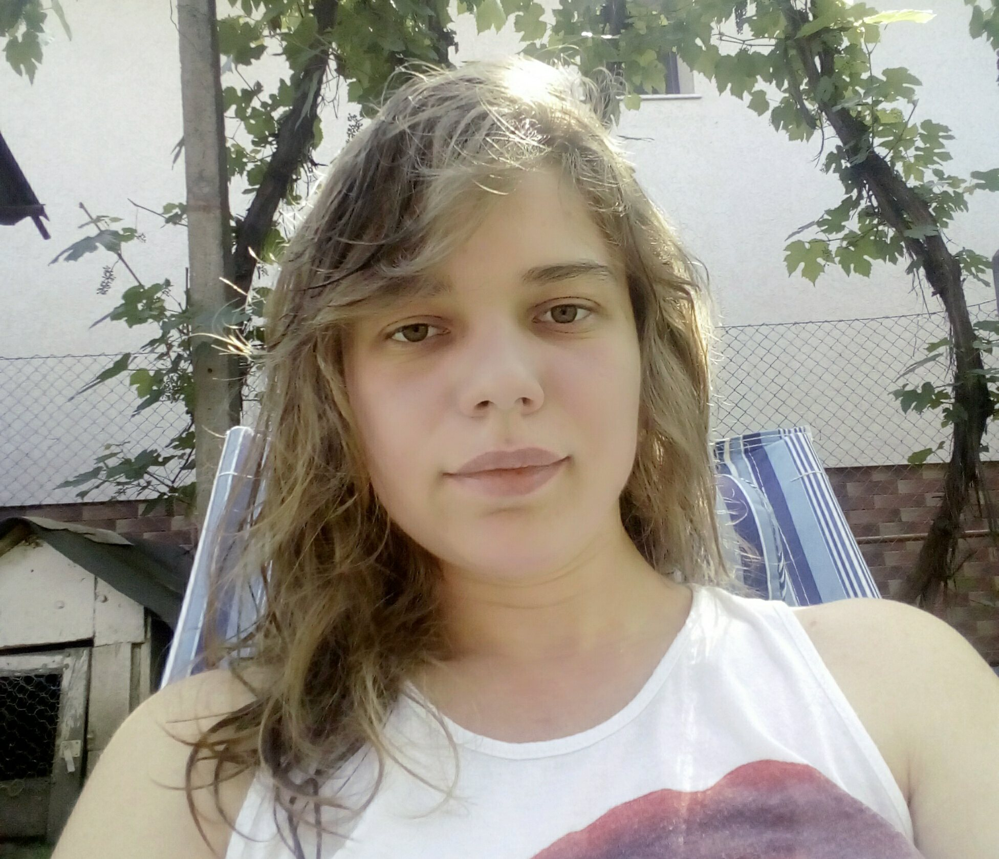

My blog

Hello and wellcome!

About me
Since i was a child i've allways liked to play on aplications or pc games. Nowadays i don't play that much because i don't have time but i have one or two apllication on my phone. Therefore playing on my pc or on my phone games was one of my hobbies when i was a child. In fact i was curios how big game companies like Ubisoft and EA manage to create them from scratch or even Gameloft. From there began my passion for the IT field and i am now doing what i wanted to do from quite some time: taking some clases in order to be able to build my own aplication or website.
The front end class
In my group there are 22 awesome colegues. Each one of them is as passionate about tehnologi as i am. Some of them are familiar with the class because they participated in similar classes and some of them are not and they are here like me to learn more. We learn practice and basic things about HTML,JAVA,CSS and more.
Hobbies
I've always likedediting videos or audious using wondershare filmora or photoshop and i don't thinks is so hard once you get the hang of it and most importantly you enjoy doing it.
My collegues
Alban Gabriel
Maria Corseu
Adi Racolta
Alexandru Bogdan
Andriev Vlad
Calapod Diana
Cristi Teodorescu
David Pintican
Florina Suciu
Horea Gavris
Joltan Alexandru Sasha
Levente Ambarus
Lidia Tolan
Pop Eugen
Popa Serban
Razvan Covatariu
Rus Marcus
Norbet Szasz
Tamas Torjan